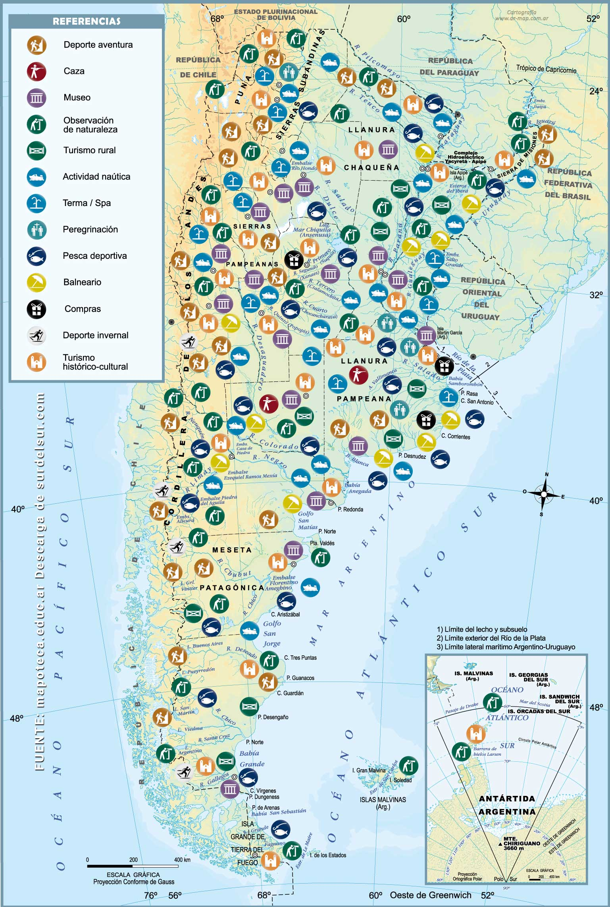
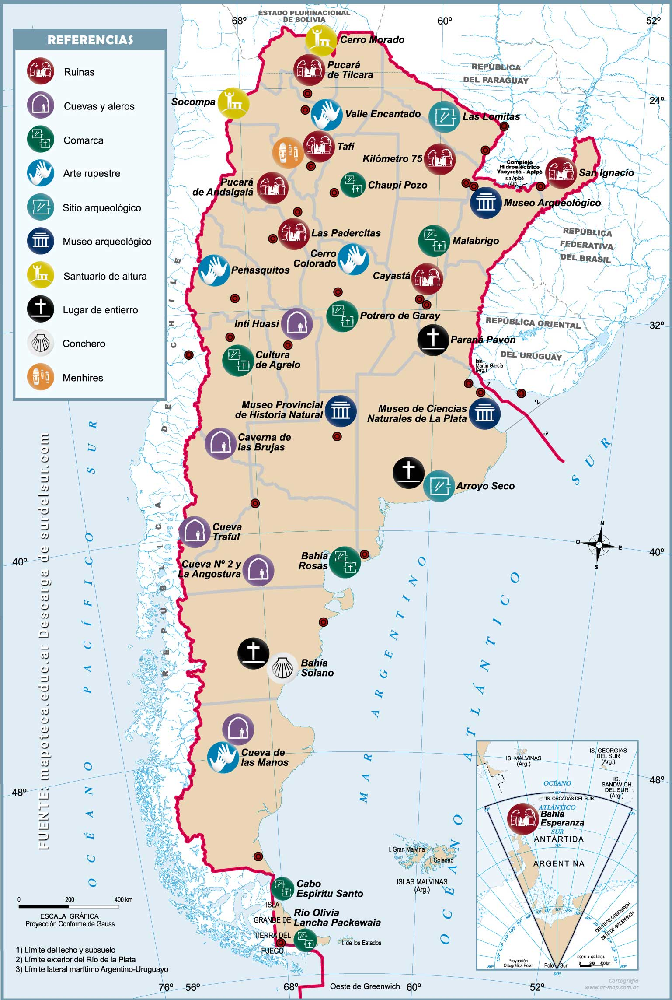
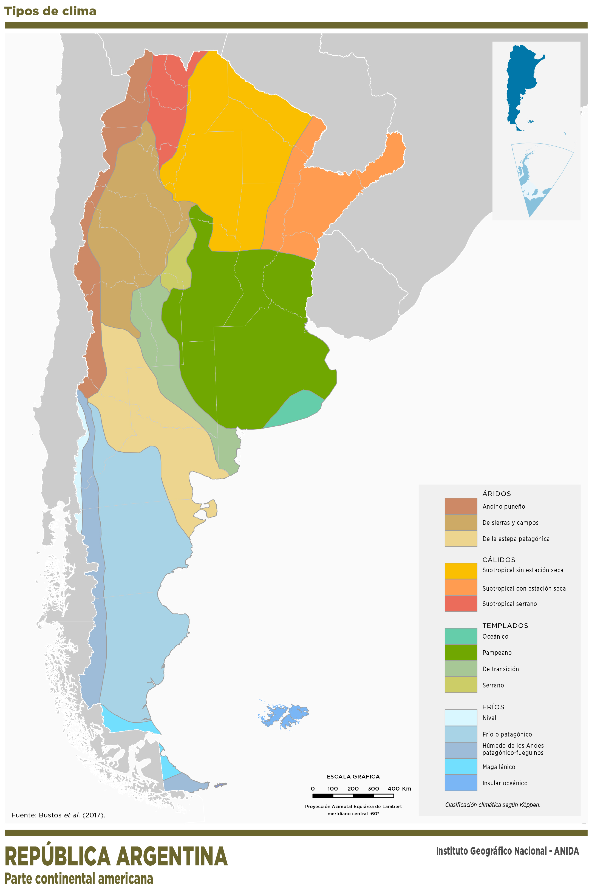

Lugares Turisticos de Argentina
Mapa turistico
Este es un Mapa Turístico de Argentina. Incluye lugares de viaje, de aventura, rural, observación de naturaleza, histórico-cultural y religioso. Además, indica las zonas correspondientes a la práctica los deportes náuticos, invernales, y de caza y pesca. También se ubican en el mapa, las locaciones de balnearios, termas y spa, museos, y centros de compras.
Mapa arqueologico
Este es un Mapa Turístico de Argentina. Incluye lugares de viaje, de aventura, rural, observación de naturaleza, histórico-cultural y religioso. Además, indica las zonas correspondientes a la práctica los deportes náuticos, invernales, y de caza y pesca. También se ubican en el mapa, las locaciones de balnearios, termas y spa, museos, y centros de compras.
Mapa tipos de climas
Antes de empezar un viaje, es bueno conocer algo del clima local, para ver que tipo de ropa vamos a necesitar. Al menos en la teoría…
